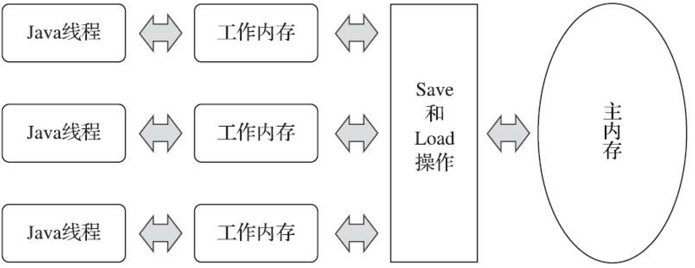

Java并发编程(2): JMM和volatile
1. 并发编程模型
在并发编程中，必须解决两个问题：
- 线程通信：线程之间通过什么机制交换信息
- 线程同步：用什么机制控制不同线程操作的相对顺序
为了解决上述问题，有两种主流的并发模型：
- 消息传递模型：线程之间没有公共状态，线程间通过发送消息进行通信，并且发送消息总是在接收消息之前，因此线程同步是天然的
- 共享内存模型：线程之间共享程序的公共状态，通过读写内存进行通信，线程同步必须显示指定某段代码在线程之间互斥执行
消息传递模型的典型代表是 go 中的 channel，而在 Java 中使用的是共享内存模型。
2. 共享内存模型的三个关键点
当设计共享内存模型时，需要考虑三个关键点：
- 原子性
- 可见性
- 有序性
2.1 原子性
原子性指一个操作是不可中断的，即使在多线程环境中，一个操作一旦开始，也不会被另一个线程打断。
例如线程 A 和线程 B 同时对一个变量 i 赋值，A 给 i 赋值为 1， B 给 i 赋值为 2，原子性保证 i 的值要么是 1，要么是 2，不会出现其他的值。这样看来原子性保证仿佛是必然的，其实不然，例如对 64 位的 long 类型进行赋值，假设 long 类型的读写不是原子的，那么便可能存在预期之外的数字。
2.2 可见性
可见性是指当一个线程修改某一个共享变量的值时，其他线程能够立即知道这个修改。
对于单线程程序而言，可见性问题是不存在的。在多线程程序中，可能由于缓存的存在，其他线程读取变量时读到的仍是旧值，怎么解决可见性问题也是并发编程的一个考虑点。
2.3 有序性
有序性问题指程序在执行过程中，进行指令重排，导致与原指令的顺序未必一致，可能在多线程带代码中导致另一个线程读到脏值。
指令是否发生重排、如何重排是我们无法预测的，也就是说，线程 A 的执行顺序对于线程 B 而言是没有保证的，而日常开发中线程 B 的结果可能依赖线程 A 部分代码的运行顺序，所以便需要保持其有序性。
3. JMM
3.1 硬件的效率与一致性
为了减少 CPU 和内存之间处理速度带来的限制，现代 CPU 引入了 cache 的概念，CPU 读取数据先从缓存中读取，读取失败后再从内存中读取。
由于每个 CPU 核心都包含 cache，这也引入了缓存一致性问题，CPU 层面通过 MESI 等缓存一致性协议解决了该问题。除了 cache 之外，为了提高 CPU 的运算效率，会对代码进行指令重排序和乱序执行，CPU 会保证最后的执行结果一致，但不保证代码顺序运行。
相关知识具体可见博客中的 程序员需要了解的计组知识(2) 和 (3) 。
3.2 JMM
JMM，Java Memory Model，Java 内存模型与硬件模型高度类似，并且在编译器层面也对指令进行重排序。
JMM 主要目的是定义程序中共享字段的访问规则。
- 所有变量都存储在主内存中（虚拟机内存的一部分，不是计算机中的内存）
- 每条线程还要自己的工作内存，线程的工作内存保存了主内存的部分副本，线程对变量的所有操作必须在工作内存中进行
- 线程的工作内存是独立的，无法互相访问

所以当线程读取共享变量的值时，先在工作内存中寻找，如果变量已经被更新中，则从主内存中将数据拷贝到工作内存中。
4. happens-before原则
上文提到，java 在编译器层面会对指令进行重排序，保证单线程内的最终结果一致，那么对于多线程程序呢？
一方面，程序员需要 JMM 提供一个强的内存模型来编写代码；另一方面，编译器和处理器希望 JMM 对它们的束缚越少越好，这样它们就可以最可能多的做优化来提高性能，希望的是一个弱的内存模型。
JMM 在其中找到了平衡点，对编译器和处理器来说，只要不改变程序的执行结果（单线程程序和正确同步了的多线程程序），编译器和处理器怎么优化都行。线程读取到的值，要么是之前某个线程写入的值，要么是默认值，不会无中生有。也就是说，JMM 并不能保证未同步的多线程程序与其顺序执行的结果一致。
不过对程序员也提供了弥补错误，对于使用同步语意（synchronized、volatile、Lock 等），提供了 happens-before 原则，只要程序满足了该原则，便能保证运行结果与预期相同。happens-before定制了两个操作之间的执行顺序，其定义如下：
如果一个操作 happens-before 另一个操作，那么第一个操作的执行结果将对第二个操作可见，而且第一个操作的执行顺序排在第二个操作之前。
如果重排序之后的执行结果，与按 happens-before 关系来执行的结果一致，那么 JMM 也允许这样的重排序。
在 Java 程序中，有如下天然的 happens-before 关系：
- 程序顺序规则：一个线程中的每一个操作，happens-before 于该线程中的任意后续操作。
- 监视器锁规则：对一个锁的解锁，happens-before 于随后对这个锁的加锁。
- volatile 变量规则：对一个
volatile域的写，happens-before 于任意后续对这个volatile域的读。 - 传递性：如果 A happens-before B，且 B happens-before C，那么 A happens-before C。
- start 规则：如果线程 A 执行操作
ThreadB.start()启动线程B，那么 A 线程的ThreadB.start()操作 happens-before 于线程 B 中的任意操作、 - join 规则：如果线程 A 执行操作
ThreadB.join()并成功返回，那么线程 B 中的任意操作 happens-before 于线程 A 从ThreadB.join()操作成功返回。
4. volatile
在 Java 中，volatile 关键字有两个作用：
- 保证变量的内存可见性
- 禁止
volatile变量和普通变量重排序
4.1 内存可见性
当一个线程对 volatile 修饰的变量进行写操作时， JMM 会立即把该线程对应的本地内存的值刷新到主内存；而对这个变量进行读操作时， JMM 会立即把该线程的本地内存置为无效，从主内存中读取共享变量的值。
内存可见性不代表线程安全，例如以下代码：
1 | public class Test { |
上述代码允许之后 count 并不为 200000，这是由于自增操作并不保证原子性，所以仍不是线程安全的。
4.2 禁止指令重排序
如果允许 volatile 变量和普通变量重排序，可能会发生问题。
1 | public class VolatileExample { |
其中线程 A 调用 writer，线程 B 调用 reader。可能出现以下场景：
- 线程 A 设置 flag 为 true
- 线程 B 读取 flag 为 true
- 线程 B 读普通变量 a 的值为 0
- 线程 A 写普通变量 a 的值为 1
虽然 volatile 保证了内存可见性，但是普通变量的值发生了读取错误。
因此 jdk 1.5 中增强了 volatile 的内存语义，禁止 volatile 变量和普通变量重排序。JVM 层面通过内存屏障来实现，内存屏障是硬件层面而言的，有两个作用：
- 屏障两侧的指令进制重排序
- 强制把 cache 中的脏数据写入内存，或者使相应的 cache line 失效
内存屏障有 LoadLoad、LoadStore、StoreStore、StoreLoad 四种。
其规则是 Store 为写指令，Load 为读指令，并按顺序代表屏障前后的指令。例如 LoadLoad 即屏障前后都是读指令，LoadStore 即屏障前是读指令，屏障后是写指令。
对于 volatile 而言，其策略是
- 在每个
volatile写操作前插入一个 StoreStore 屏障 - 在每个
volatile写操作后插入一个 StoreLoad 屏障 - 在每个
volatile读操作后插入一个 LoadLoad 屏障 - 在每个
volatile读操作后再插入一个 LoadStore 屏障
volatile 禁止重排序的功能最经典的用法是双重检测的单例模式：
1 | public class Singleton { |
说明：因为代码复杂，考虑点多，日常开发中不建议双重检测的单例模式，更加推荐使用静态内部类或者枚举的形式，具体可见作者的 小话设计模式(2)。